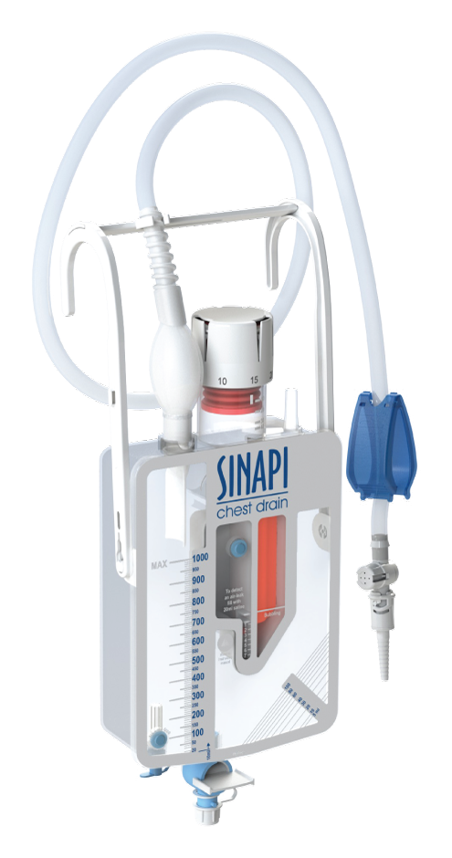
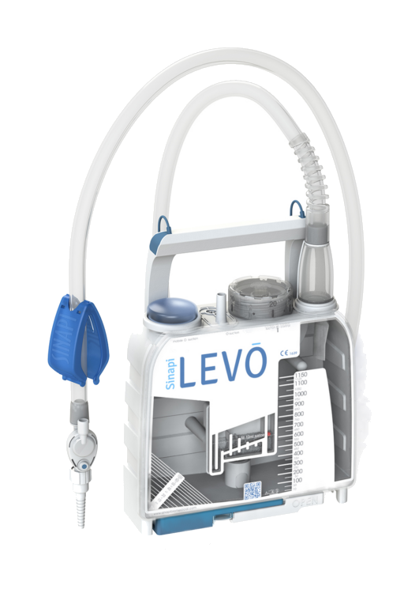

Грудне дренування
Sinapi Chest Drain
Системи грудного дренування. Конкретну модель, місткість і конфігурацію фіксуємо після уточнення клінічного сценарію.
Запросити модельЛінійка LEVO для грудного дренування. Порівнюємо моделі за форматом, конфігурацією та потребами кардіо- або торакального відділення.

Для запиту фіксуємо призначення системи, потрібну конфігурацію та модель. Односторонній механічний клапан, камера контролю витоку повітря, шкала об’єму, порт для відбору проб і дренажний кран зазначаються лише там, де вони передбачені конкретною моделлю.
Наявність моделі, точну місткість і комплектацію підтверджуємо у відповіді на запит.
Системи грудного дренування. Конкретну модель, місткість і конфігурацію фіксуємо після уточнення клінічного сценарію.
Запросити модель
Моделі середнього формату. Відмінності конфігурації та комплекту уточнюються за актуальними матеріалами виробника.
Запросити модель
Система більшого формату для післяопераційного грудного дренування. Конфігурацію та комплектацію уточнюємо для конкретного запиту.
Запросити модельТехнічні характеристики та порядок застосування необхідно звіряти з актуальною інструкцією конкретної моделі. Сторінка не є інструкцією з медичного застосування.
Надішліть назву, фото або стару специфікацію — підготуємо уточнювальні питання.